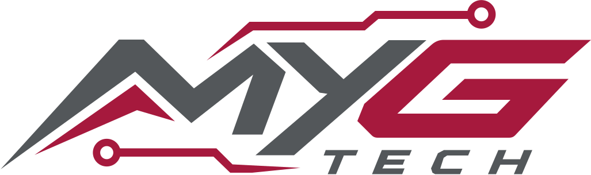
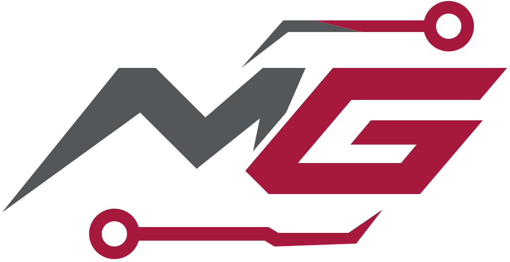

Yazılım Geliştirme
Masaüstü, web ve uygulama geliştirme; sistem entegrasyonu ve veri odaklı yazılım mimarileri.

Elektronikten yazılıma, mikrodenetleyicilerden endüstriyel otomasyona kadar teknoloji katmanlarında çözümler geliştiriyorum.

Ben Muhammed Yusuf Gültekin. Farklı disiplinleri bir araya getirerek gerçek dünyada karşılığı olan teknolojik çözümler tasarlıyorum.
Bir mikrodenetleyicinin register seviyesinden masaüstü uygulamasının arayüzüne, PCB tasarımından makine otomasyonuna kadar sistemi bir bütün olarak ele alıyorum.
Nasıl çalışıyorum? ↘Tek başına çalışan parçalar değil,
birlikte çalışan sistemler.
Masaüstü, web ve uygulama geliştirme; sistem entegrasyonu ve veri odaklı yazılım mimarileri.
Mikrodenetleyici tabanlı kontrol kartları, haberleşme protokolleri ve gerçek zamanlı uygulamalar.
Elektronik devre tasarımı, PCB geliştirme, prototipleme ve donanım doğrulama.
PLC, HMI, SCADA, makine kontrolü ve endüstriyel veri izleme çözümleri.
Ürün ve makine bileşenleri için üç boyutlu modelleme ve tasarım odaklı geliştirme.
Elektronik, yazılım ve mekanik tasarımı tek bir mühendislik yaklaşımında buluşturuyorum.
Gerçek ihtiyaçlardan doğan yazılımlar,
endüstriyel sistemler ve ürün fikirleri.
Görüntü işleme, IEC 61131-3 PLC kontrolü, fiziksel I/O ve endüstriyel haberleşmeyi tek cihaz ve tek runtime mimarisinde birleştiren bütünleşik kontrol platformu. Web tabanlı VP Studio, Ladder editörü, Vision araçları, task scheduler ve Modbus altyapısı aynı ekosistemde tasarlanıyor.
Çoklu kamera görüntüleme, ROI tabanlı kontrol ve görüntü işleme akışlarını Siemens S7 PLC ve UART tabanlı I/O sistemleriyle birleştiren Windows uygulaması. Kamera seçimi, çözünürlük ayarları, eşik kontrolleri ve barkod/QR altyapısı aynı operatör yazılımında buluşuyor.
Endüstriyel laminasyon ve fırın uygulamaları için WPF tabanlı operatör arayüzleri. Siemens S7 PLC haberleşmesi, makine durumlarının görselleştirilmesi, konfigürasyon ve SQL veri erişimi gibi katmanları bir araya getiren yazılımlar.
Malzeme kataloğu, proje bazlı ihtiyaç listeleri, Excel/CSV içe aktarma ve PDF/Excel çıktı akışlarını kapsayan web ve masaüstü çözümleri. Aynı iş sürecini farklı kullanım senaryolarına göre ASP.NET Core MVC ve WPF üzerinde ele alan iki uygulama.
Birden fazla yapay zekâ sağlayıcısını kontrollü yerel bilgisayar işlemleriyle buluşturmayı hedefleyen modüler Windows ajanı. Görev planlama, araç çağrıları, dosya ve Git iş akışları, sonuç doğrulama ve güvenlik politikaları için katmanlı mimari.
Motosiklet sürüşleri için hız göstergesi, rota takibi, sürüş geçmişi ve istatistikleri hedefleyen mobil uygulama. Clean Architecture ve MVVM yaklaşımıyla ayrıştırılmış .NET MAUI çözüm temeli; gerçek GPS ve kayıt akışları geliştirme yol haritasında.
COM port seçimi, seri veri gönderme/alma ve USB HID cihazlarını listeleme için Windows haberleşme aracı.
Kaynak kodu incele ↗İki bölmede sıcaklık ve nem izleme, otomatik/manüel çıkış kontrolü ve Firebase üzerinden uzaktan durum takibi.
Satıcı API'sinden siparişleri tarih aralığıyla sorgulama, kargo barkodu üretme ve yazdırma akışları.
Kaynak kod bağlantısı şimdilik paylaşılmıyor.Windows sistem tepsisi, uzaktan JSON ayarları, süre geri sayımı ve çalışma aralığı dışında ekran kaplama davranışı.
Kaynak kodu incele ↗Siemens S7 PLC haberleşmesi ve fırın operatör ekranları için C# WPF masaüstü uygulaması.
Kaynak kodu incele ↗Firma bazlı gelir/gider, kasa hareketleri ve bakiye takibi için PHP, MySQL ve PDO tabanlı web uygulaması.
Kaynak kod bağlantısı şimdilik paylaşılmıyor.Özel depolardaki çalışmalar portföyde yalnızca genel kapsamlarıyla anlatılmıştır. Kaynak kod bağlantıları yalnızca herkese açık depolara verilir. Proje durumları, depolardaki mevcut geliştirme seviyesini yansıtır.